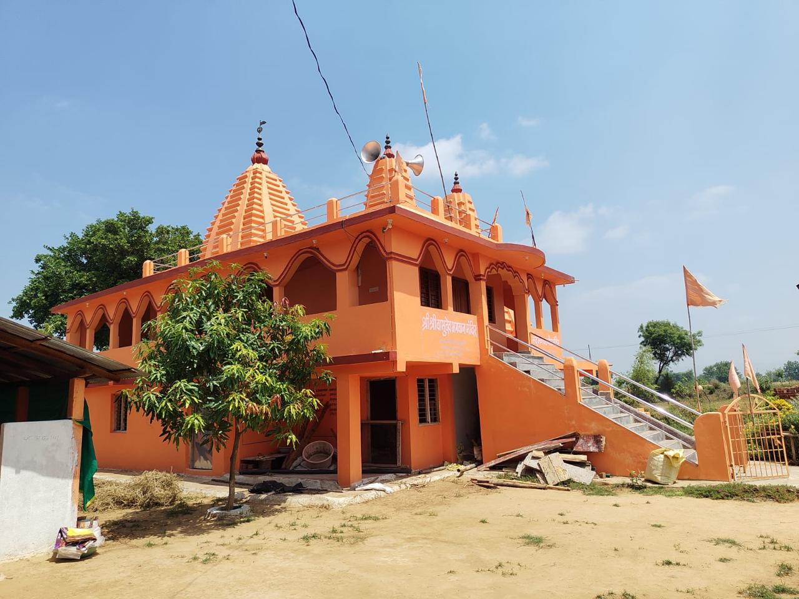

Gita Prachar Mandali • June 16, 2026 • 3 min read
The Stages and Techniques of Kriya Yoga
Lahiri Mahasaya organized Kriya Yoga into four progressive stages. The First Kriya consists of Mahamudra, Nabhimudra, Pranayama, Brahma Yoni Mudra, and Khechari Mudra. Practicing these brings profound inner peace and accelerates spiritual growth beyond what centuries of ordinary effort can achieve.
Read More →

Gita Prachar Mandali • Timeless Wisdom
The Supreme Guru: Babaji Maharaj
Babaji Maharaj is a supremely liberated yogi who has retained his physical form in the Himalayas for approximately 600 years. He taught by example — once, Lahiri Mahasaya found Babaji washing the dirty brass pot of an ordinary sadhu. When asked why, Babaji smiled, teaching the ultimate lesson of humility and equal vision.
Read More →

Gita Prachar Mandali • Ancient Wisdom
What is Yoga? — The Union of Soul and Supreme
The word "Yoga" originates from the Sanskrit root "Yuj", meaning to join or connect. At its core, yoga is the union of the individual soul (Jivatma) with the Supreme Soul (Paramatma). According to Sage Patanjali, yoga is the cessation of the modifications of the mind, leading to true liberation.
Read More →